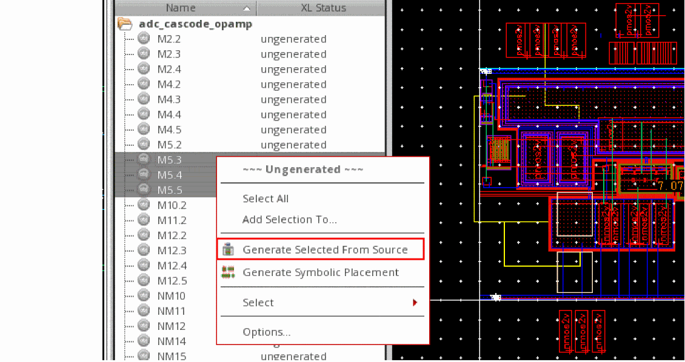
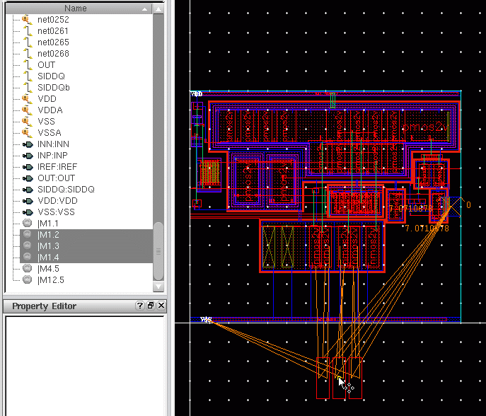
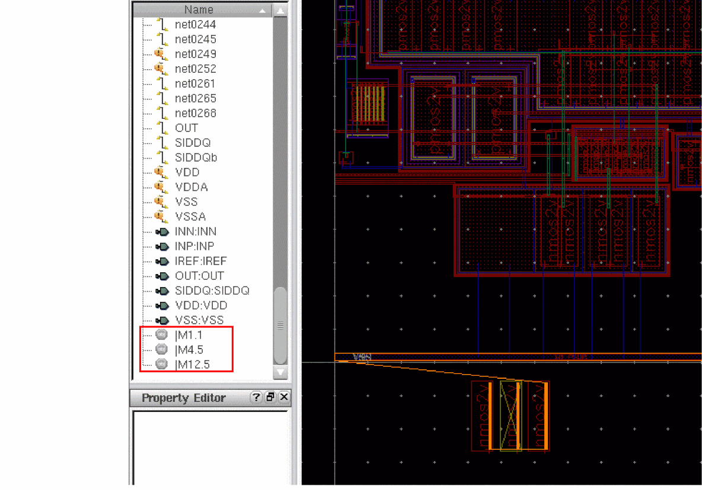

Viewing Ungenerated Instances In Navigator
Ungenerated instances are displayed as inactive objects at the end of the object list in the Default Navigator filter. The Navigator also provides an Ungenerated filter that you can use to view only the ungenerated instances in the design. You can customize the filter in the standard way by using the Customize Navigator Filters form.
The display of ungenerated instances in the Navigator provides you direct access to all the ungenerated instances in a design. In fact, you can quickly select a set of ungenerated instances in the Navigator and place them in the layout—the operation being similar to a Pick From Schematic operation.
You can also select ungenerated instances in the layout Navigator to verify the device correspondence, before the physical object and the binding is created. If an ungenerated schematic instance reflects correspondence to a target layout instance that does not exist, a warning icon gets displayed for that instance on top of the ungenerated icon in the Navigator. In addition, a tooltip displays that mentions that the target layout object does not exist.
If you select an ungenerated instance in the layout Navigator, the corresponding schematic instance is selected in the schematic Navigator and in the schematic canvas. If you select an mfactored, ungenerated instance in the schematic Navigator or in the canvas, all the corresponding layout instances are selected in the layout Navigator.
To place an ungenerated instance in the layout:
-
Right-click an ungenerated instance in the Navigator and choose Generate Selected From Source.
You can also select multiple ungenerated instances from the Navigator and choose Generate Selected From Source to place all the instances on the layout canvas.
 -
Select a location on the layout canvas where you want to place the selected instances.
The selected instances are placed in the layout, as displayed in the figure below, and the list of ungenerated instances in the Navigator is instantly updated to display only those instances that are still ungenerated.

Related Topics
Return to top